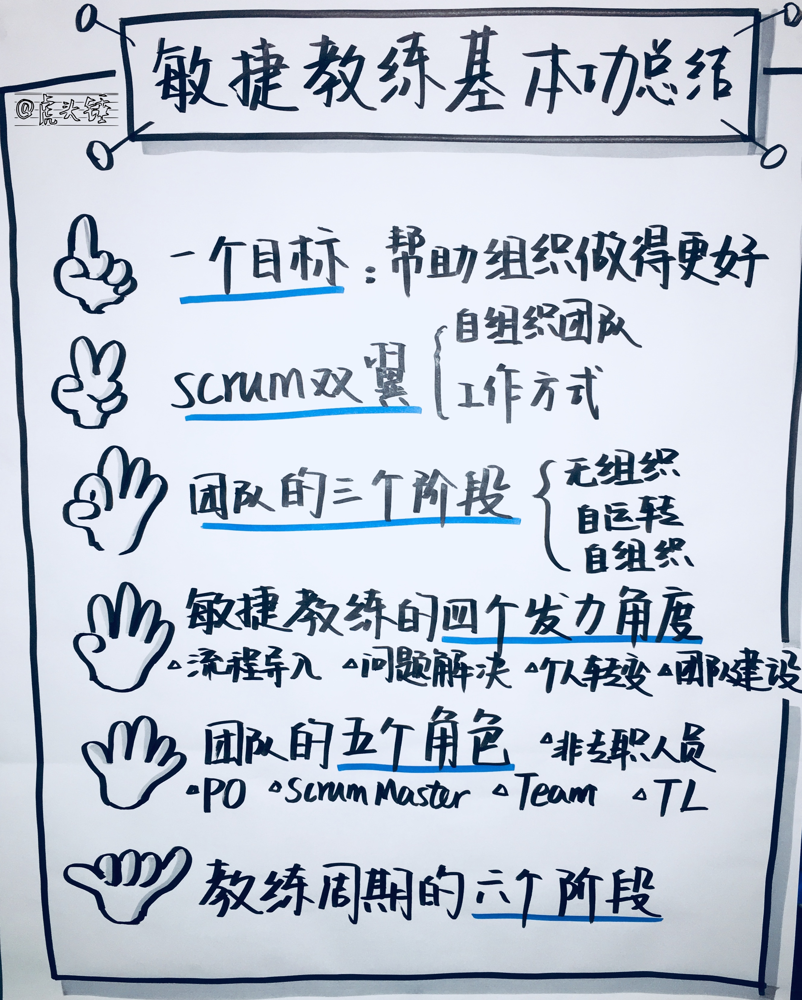
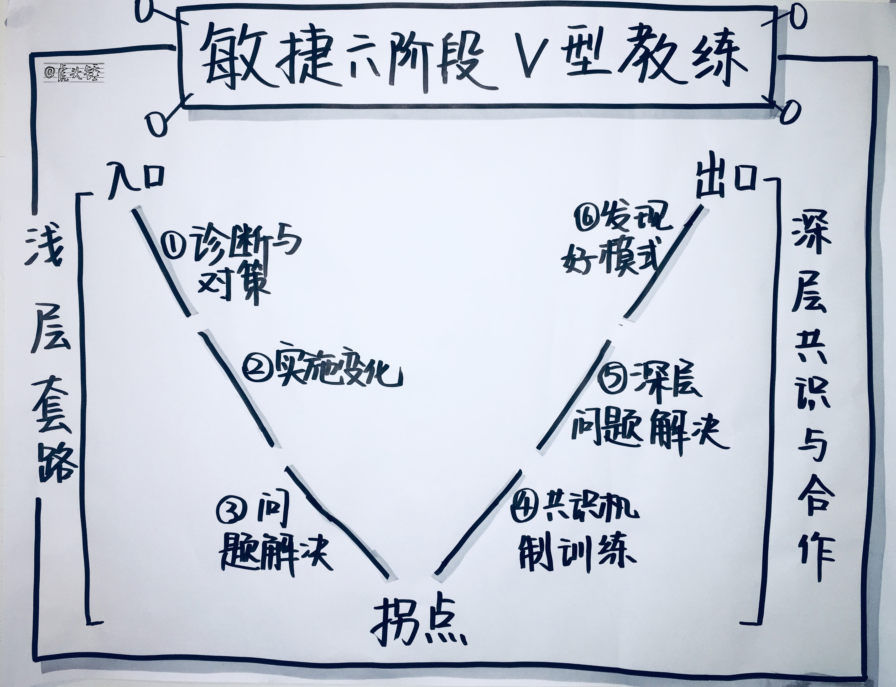
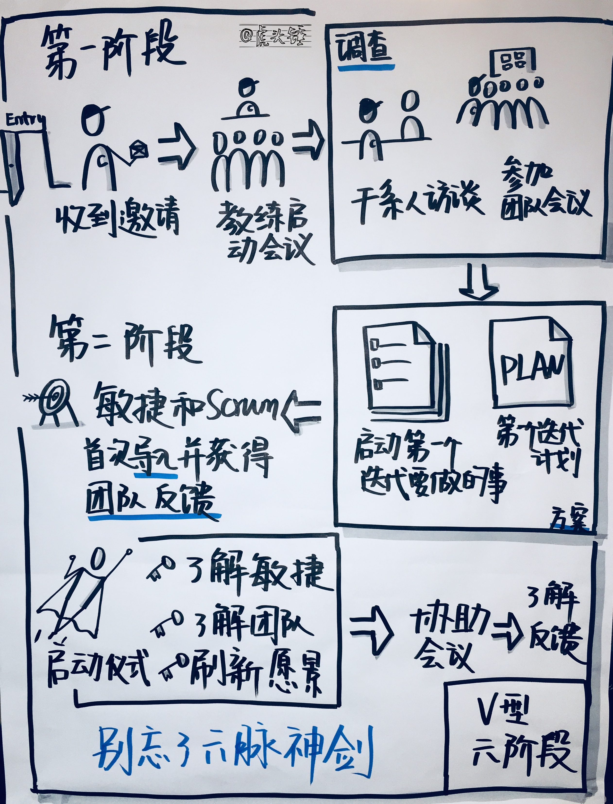
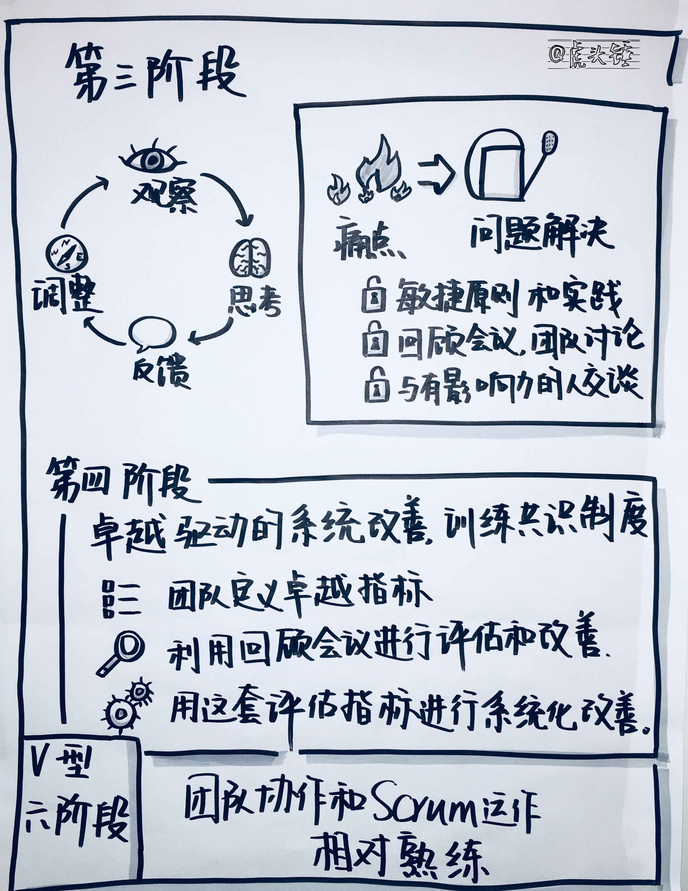
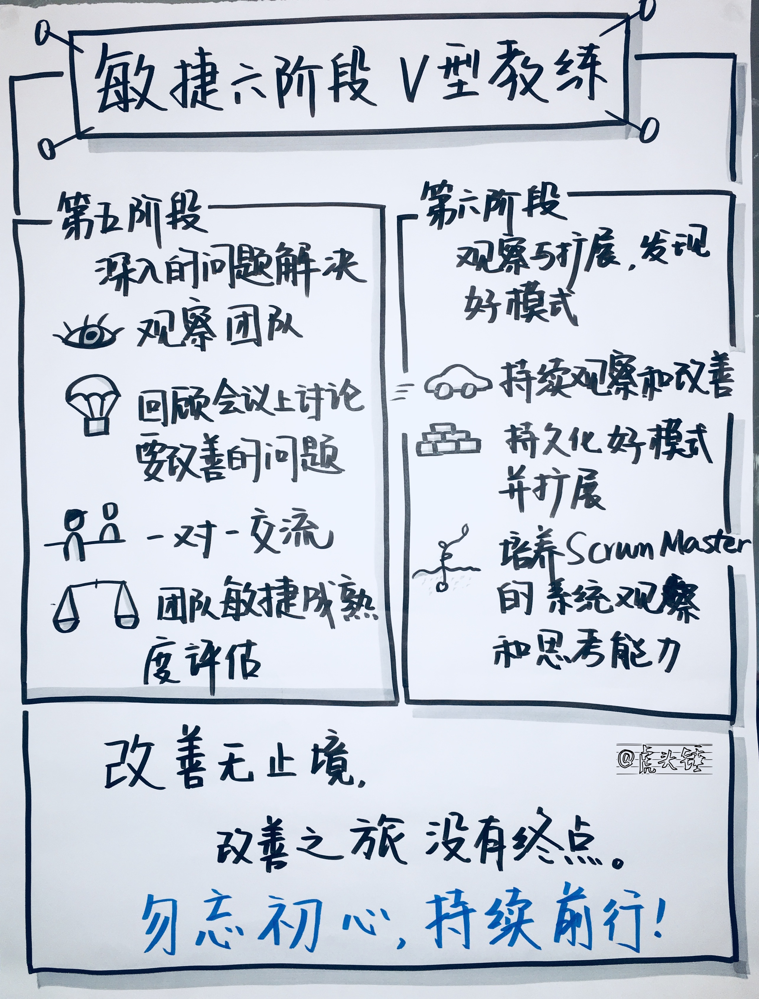

本文按1-2-3-4-5-6的结构，对敏捷教练的基本功进行总结，并讲述敏捷教练的典型实战周期。
1-2-3-4-5-6指的是：
- 敏捷教练的1个目标。
- Scrum 的双翼。
- 团队的3个阶段。
- 敏捷教练的4个发力的角度。
- 团队中的5种角色。
- 教练周期的6个阶段。

#基本功
1个目标
敏捷教练的目标是帮助组织做得更好。正如敏捷宣言所说：我们一直在实践中探寻更好的软件开发方法，身体力行的同时也帮助他人。
Scrum 的双翼
Scrum的双翼或两条轨道，一是关于人，即自组织团队，二是关于工作方式，即基于精益敏捷的Scrum框架的运用。掌握了这两个要点，即提纲挈领，纲举目张。
团队的三个阶段
第一阶段是无组织。团队绩效不稳定且相对较低，团队成员呈现出一种各自为政的状态，团队活动从目的到流程都缺乏聚焦。
第二阶段是自运转。团队绩效达到一个相对稳定的状态，各项团队活动目的明确，流程清晰，在 Scrum Master 不在的情况下也能自动运转起来。
第三阶段是自组织。团队绩效会阶段性地持续提升，团队成员的互动达到一种高效快乐的状态，团队能够持续地从根本上解决问题，和持续改善。流程中的浪费越来越少，越来越流畅。目标的完成越来越好。
敏捷运用就是把团队从无组织状态带到自运转状态，再带到自组织状态。
敏捷教练的4个发力的角度
- 流程导入：包括产品管理流程和团队迭代运作流程。
- 问题解决：持续解决问题，打造解决问题和改善的文化，形成学习型组织。
- 个人转变：让个人接收敏捷思维，探索更好的工作方式。
- 团队建设：基于 Scrum，打造高效快乐的自组织团队。
团队中的5种角色
- 产品负责人：产品负责人作为 Scrum 团队的掌舵人，对 Scrum 工作方式的成败至关重要。产品负责人可能有两种，一种是具备开放心态，一种并不理解但又排斥敏捷的价值。对于前者，可直接交流。对于后者，可以让他先观察，接受他先不行动。
- Scrum Master：Scrum Master 作为流程的化身，从另一个角度对 Scrum 的成败有举足轻重的影响。Scrum Master 要了解敏捷和 Scrum 的基础框架，要相信和支持自组织团队，要有持续改善的系统思维，并通过大量琐碎辛苦的工作来使 Scrum 的运作尽善尽美。Scrum Master 同样可能有两种。一种是主动把这个角色当成一个职业，并且主动投入去精益求精。另一种只是偶然被安排了这个职位。
- 团队成员：通常来说 Scrum 不会直接影响团队成员的利益得失，大多数团队成员对于高效快乐的工作方式是不会反对的。有了产品负责人对 Backlog 的良好管理，和 Scrum Master 的有效引导，团队取得进步是自然而然的。
- 非专职人员：非专职人员需要理解 Scrum 工作方式，并与团队成员有效配合。非专职人员与团队的合作方式，需要打磨出显式化可执行的规则。
- Team Leader：直接工作在 Scrum 团队内的 Team Leader 可能会受到 Scrum 工作方式的冲击。Team Leader 是否要受 Scrum 框架的制约，要根据组织的实际情况处理。
教练参与周期的6个阶段
- 调查与方案：了解团队的目标，所面临的问题，制定敏捷导入方案。
- 导入与反馈：导入敏捷，获得团队反馈。
- 痛点与问题解决：了解团队的问题和痛点，协助问题解决。
- 卓越驱动的系统改善，共识机制训练：制定改善架构，进行有系统的改善。
- 深入的问题解决：发现和解决那些影响敏捷工作方式发挥作用的障碍。
- 观察与拓展，发现好模式：观察团队中浮现出的好的模式，借鉴到其他团队。
本文的剩余部分将会详细介绍这个敏捷教练周期的6阶段。
阅读敏捷教练周期的6个阶段时，有几个注意事项：
- 谨记教练的目标是打造按敏捷方式完美运作，并内建了持续改善能力的自组织团队。
- 深入的敏捷实施涉及到工作方式与人两个维度。
- 6个阶段包括其顺序都不是绝对的，需要根据团队实际情况定制。
- 6个阶段，可能的话可以与迭代的节奏一致，即一个阶段对应一个迭代，但也不绝对。

阶段1：调查与方案，诊断与对策
这个阶段的开始以收到教练需求邀请为标志，以制定出敏捷实施方案，并能够开始第一个迭代的敏捷导入为标志。这个阶段包括调查与方案两个环节。
在调查环节所要做的事情包括：
- 访谈关键干系人，包括部门经理、项目经理、产品负责人、Scrum Master、开发 Lead、测试 Lead、架构师和设计师等，了解团队的目标及面临的主要问题。
- 参与团队的会议，现场了解团队现有的工作方式。
方案包含两部分
- 在启动第一个迭代前所要做的事。
- 第一个迭代的启动计划。
在启动第一个迭代前所要做的事可能有
- 如果产品列表和用户故事的管理不能达到启动第一个迭代的条件，需要与产品负责人一起工作，打磨产品列表和用户故事，使之达到准备好的状态。
- 如果团队规模和技能配备妨碍了团队自组织和跨职能工作，需要先解决这部分问题。
- 如果 Scrum Master 对敏捷和 Scrum 的知识不够，需要先补足这部分知识。
在调查和方案阶段，所使用的标准是 Scrum、用户故事和精益敏捷的基础知识，以此来识别问题，补足知识，和解决问题。所使用的技巧主要是讲授和问题解决，也包括一定的指导。
在这个阶段最开始，还有一件最重要的事，就是教练启动会议。没有教练的关系，就没有教练的行为。
经过第1阶段，就具备了开始第一个迭代的敏捷导入的条件。第一个迭代的启动计划在下一节谈及。

阶段2：实施变化，导入与反馈
这一阶段的目标是进行敏捷和 Scrum 工作方式的首次导入，并获得团队的反馈。对于已经使用 Scrum 的团队，是一种重新导入。已经使用 Scrum 的团队，有可能受制于团队已有模式的影响，只是在形式上采用了 Scrum，而丢掉了本质和核心的东西，重新导入需要以正确的敏捷修正受到侵蚀的敏捷。
这个阶段如果有条件的话，可以做一个全体团队成员参与的一到两天的启动仪式：
- 与 Scrum 建立连接：探讨已有工作方法中好的地方，不好的地方，建立改善的愿望，把 Scrum 当作好的工作方法的载体，建立良好使用 Scrum 的决心。
- 介绍精益敏捷、Scrum 和用户故事的核心和实践。
- 让团队成员深入了解彼此，制定团队的价值观和团队规范。
- 刷新产品愿景、路线图、发布计划和产品列表。
如果不能进行一到两天的启动仪式，则可以在每个 Scrum 仪式前分别用10分钟左右时间介绍该仪式及相关物件：
- 在产品列表精化会前介绍产品列表精化的目的和流程。
- 在迭代计划会前介绍计划的目的和流程，及每日站会。
- 在迭代评审前介绍评审会议及回顾会议的目的和流程。
- 在每个会议的介绍之后，协助该会议的进行。对于会议中偏离目的与流程的行为，进行指导。指导可以以在每个会议结束时发表评论的方式进行，可以在会后进行个别谈话，也可以拿到回顾会议讨论。
在第一迭代进行到中间的时候，即可以开始了解团队对工作方式变化的反馈，因为这时工作方式的效果已经能发生了。了解反馈的目的是对工作方式进行修正。在第一迭代中间了解反馈还有一个好处是，鼓励团队把反馈和问题带到回顾会议讨论。内建团队的问题发现和解决能力是敏捷实施的重要目标，为了达到这一目标，敏捷教练要有意压制自己对观察到的问题的表达，而是把团队推到前面，帮助团队成长。
在导入和反馈阶段，讲授、协助和指导的技巧都会用到。问题解决和持续改善也会触及。协作指挥和冲突领航则是择机采用。
经过第2阶段，团队初步体会了完整的正确的敏捷，并为工作方式的变化提供了反馈，以帮助后续工作方式的调节。
通常来说，经过一个迭代按正确 Scrum 的运转，团队对更加清晰透明的工作方式会有正面反馈，迭代的完成率等结果指标也会有明显提升。
第3阶段：痛点与问题解决
在这一阶段和后续阶段持续要做的事是，持续观察团队的 Scrum 仪式，发现其中违背正确敏捷实践的行为，以及发现团队工作中涌现出的好的模式。对于观察到的结果，可以在当时即每个仪式结束时现场提出来，可以在个别谈话中进行，也可以留到回顾会议。依然是两个原则：只要不影响团队运作的行为，尽量延迟到回顾会议进行；培养团队的问题解决能力重于问题解决本身。
这种观察、思考、反馈和调整会延续到整个教练周期，并且以打造按正确敏捷运作、具有自我改善能力的自组织团队为目标。
在这个阶段，除了观察、思考、反馈和调整之外，可以设定另一主题，那就是痛点与问题解决。具体的方式采用一对一谈话。谈话的对象包含产品负责人、Scrum Master、团队 Lead 和其他对工作方式有热情的人。整个教练计划可以公开给团队，可以发起一对一交流，也鼓励团队成员来发起一对一交流。
这一轮交流的三个主题是：
- 进一步获得他们对工作方式变化的反馈。
- 探询他们的痛点和希望解决的问题。
- 同时提供对他们本身的反馈。
这种交流是一种一对一 Retrospective，其目的、边界和框架如下：
- 一对一 Retrospective 是对团队Retrospective 的鼓励和驯化。是为了帮助打磨团队Retrospective。
- 一对一 Retrospective 是对团队Retrospective 的补充。即使团队 Retrospective 已经搞得很好了，也还需要一对一 Retrospective。
- 一对一 Retrospective 可以由 Scrum Master 发起，也可以由任何人向任何人发起。
- 一对一 Retrospective 的目的，是加强人与人之间的连接，传递改善的信念，和计划和执行改善。
- 一对一 Retrospective 的边界，是围绕改善的基调，就与团队项目工作相关的事进行讨论。
- 一对一 Retrospective 的框架，可以包含探询交流对象对工作方式的反馈、探询痛点和关注的问题，和以 Scrum 实践和角色要求为基准、以观察到的行为为依据向交流对象提供的反馈。还可以包含不同团队之间的经验传递、桥梁和延展。
- 如果希望痛点和问题的探询更封闭一点，可以分解为几个角度：就团队项目工作的上下文而言，您的目标和期望的理想状态是什么？与现状的差距是什么？流程上有什么问题，或有什么妨碍理想状态的达到？团队合作方面呢？团队工作绩效和质量呢？任何其他方面？
- 这个框架的运用要灵活。人的主动参与重于规则。如果人能主动参与改善事项的发掘、计划和行动，框架就可以放下。
- Scrum Master 日常有力的观察是 Retrospective 的重要输入。
- 各个角色的普适标准：专业、尊重、坚持。
- 改变的第一原则：一切改变基于自愿。改善的用意是改善系统，不是改变个人。
这一阶段可能获得的问题有：
- 会议效率问题：在 Scrum 框架之下继续打磨提升，细致地进行会议每个环节的提升，包括会前准备、会中引导、会后跟踪。比如说在精化会前大家可以先熟悉一下故事，在评审会前需做好演示的准备。在会议中引导促进大家的互动。
- 三个角色的职责问题：产品负责人负责与客户和产品有关的问题，Scrum Master 负责与沟通协调有关的问题，团队负责与技术相关的问题。
- 提升团队的参与度和对完整故事的关注：通过提升透明性，在计划会和站会上更加清晰透明地呈现工作来提升团队的参与度，通过设置故事 owner 提升和训练对完整故事的关注。
- ：需要团队共创解决方法，比如说，一个原则是，开发优先做需要测试的任务。还可以设置开发任务的检查点。开发与测试结对工作。
- 团队建设，心理安全与归属感问题：需要与管理者和团队讨论处理。建立产品团队的形态与心态。
这些问题大致分布在流程与效率、角色职责、团队感和业务学习方面。
对于收到的问题的解决思路有：
- 按敏捷框架中的原则和实践解决。
- 拿到回顾会议上，由团队讨论解决。
- 对于深层次的组织问题，第一步是清晰的呈现问题，第二步是与有影响力的人交谈。
- 鼓励学习其他团队的 Scrum 运作。
在这个阶段，对于团队的 Scrum 仪式，依然会讲授、协助和指导。更多的是以团队为中心的立体双向反馈，了解团队的痛点和问题，并协助解决。
经过这一阶段，团队的敏捷运作已经达到了有意识的状态，虽然还不能完全自运转，但已经会发生一些有意识的提升和改变。另一方面，对于团队的问题也有了更深入的了解，为下一阶段的系统化的改善打下基础。

第4阶段：卓越驱动的系统改善，训练共识机制
如上一阶段所说，对团队的观察、思考、反馈、调整还在持续进行。
此外，可以引入卓越驱动的系统改善。卓越驱动的系统改善即是：
- 团队定义一组卓越指标，即团队认为对于提升团队工作方式最有价值的东西。
- 对于卓越指标，利用每一次回顾会议，进行评估和改善。
- 以这一套卓越指标驱动系统化的改善。
卓越指标示例：
卓越指标1. 跨职能团队
定义：不要让技能不平衡成为障碍。
子条目：
- 定义人与技能矩阵，以及理想的技能配置。在理想情况下，每一所需的技能最好有至少两个人精通和一个人了解。找出现状矩阵与理想矩阵的差距。
- 在迭代工作中，在团队容量容许的情况下，有意识地安排结对工作，以传播技能。结对工作所造成的团队速率下降以不超过10%为宜。
- 跨职能与结对的安排需要考虑个人兴趣。
- 制定长期的跨职能团队建设计划。
卓越指标2. 价值流优化
定义：移除障碍，让团队所有的努力都指向对客户价值的贡献。
子条目：
- 制定 DoR 准备好的定义，形成高质量的迭代入口。
- 制定 DoD 完成的定义，形成高质量的迭代出口。 -每迭代的故事分为承诺的故事和可选的故事，可选的故事可以在产品列表精化会或迭代计划会上产生。
- 识别和移除障碍，帮助工作更好地流动。
- 会议议程有清晰的结构，每一议程精确到十分钟的颗粒度。
卓越指标3. 团队工作
定义：团队协作，以最大化团队产出。
子条目：
- 定期知识分享。
- 经常庆祝成功。
- 集体代码所有。
- 交叉演示工作，例如 Tom 可以演示 Jerry 的工作。
卓越指标的制定，要由团队一起完成。具体可采用团队会议与一对一交流相结合的形式。
经过阶段4，团队的协作和 Scrum 运作已经相对比较熟练了。但其中依然有大量可以改善的点。而这个卓越驱动的系统改善提供了一个结构，充当了一个面。日常点的观察，与卓越驱动的回顾会议的面的结合，让改善更深入地发生。
阶段5：深入的问题解决
在这一阶段，观察与改善继续进行。
经过前面几个阶段，团队的 Scrum 运作得比较好了，也建立了改善系统和一定的改善能力，解决问题的意识也建立起来了。
下一步是发现和解决那些影响敏捷深化的问题。这一步所采用的方法主要有四个：
- 观察团队的 Scrum 运作。
- 在回顾会上讨论需要改善的问题。
- 一对一交流。
- 团队的敏捷成熟度评估。
在这一阶段所要解决的，可能是一些深层次的问题，例如：团队中存在层级结构，或者团队成员来自不同的部门，让团队无法真正自组织，产生高质量的互动。
在这一阶段，问题解决是采用的主要技巧。

阶段6：观察与扩展，发现好模式。
这一阶段主要有三个任务：
- 持续观察和改善。
- 发现团队中涌现出的好的模式，并使之持久化，和扩展到其他团队。
- 培养 Scrum Master 的系统观察和思考能力。
改善是无止境的，改善之旅是没有终点的。唯晓成事之规律，方持不灭改善心。
最后用大野耐一对丰田生产方式两个支柱的解读帮助我们了解敏捷和 Scrum 最本质的东西：人，以及人的配合。
大野耐一在其所著的《丰田生产方式》一书中这样评价“准时化”和“自动化”之间的关系： “准时化”和“自动化”是丰田生产方式的两大支柱。如果用棒球比赛来打比方的话，那么准时化就相当于团队协作，也就是通过团队密切而巧妙地配合，将其实力发挥到极致。而自动化则是要求每一位选手的个人技术要越来越高超，并且进一步使得团队的整体实力在个人技术提高的基础上得到更充分的体现。准时化可以让问题明确化，自动化可以让解决问题的努力更有效。自动化——让每一个人提高自己的水平，整个团队也会因为每一位选手的高超技艺，相互之间的配合变得更加默契，战法也更加成熟和丰富起来。当然，由此带来的结果就是：比赛的成绩越来越好，也就是企业的经营业绩越来越优异。